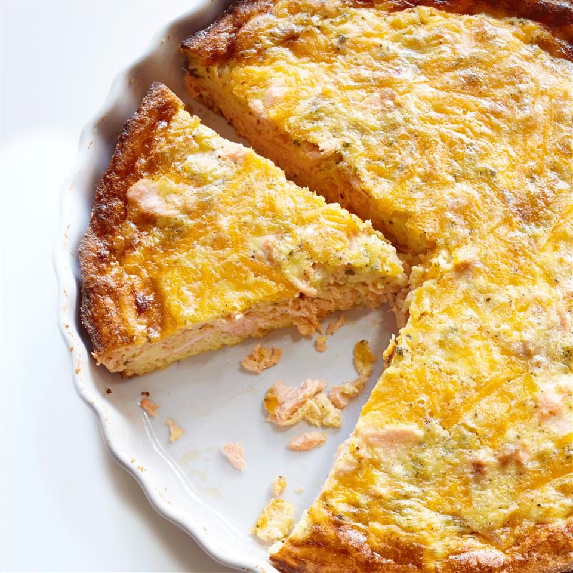

Salmon Quiche

Description
My father made this while I was growing up on the holidays for family who didn't like turkey or ham.
It's become a staple in my holiday dinners as well.
I have never served it to someone who didn't love it and beg for the family recipe after. We always make two and freeze one for later! It is excellent paired with a side of grilled asparagus.
Nutrition Facts
Per Serving: 443 calories; protein 28.6g; carbohydrates 16.3g; fat 28.9g; cholesterol 166.2mg; sodium 606.4mg.
Ingredients
- 1 (8 ounce) package Cheddar cheese, cubed
- ¼ onion, diced
- 4 eggs
- 1 (12 fluid ounce) can evaporated milk
- 1 pinch salt
- 1 pinch ground black pepper
- 1 pinch garlic powder
- 1 pinch dried parsley
- 1 pinch dried sage
- 1 (14.75 ounce) can salmon, drained, flaked and bones removed
- 1 (9 inch) frozen pie crust
- ½ cup shredded Cheddar cheese, divided
Steps
- Preheat an oven to 375 degrees F (190 degrees C).
- Place 8 ounces of cubed Cheddar cheese, onion, eggs, and evaporated milk into a blender. Season with salt, pepper, garlic powder, parsley, and sage, then blend until smooth. Spread salmon over the pie crust. Sprinkle 1/4 cup of shredded Cheddar cheese then pour the egg mixture on top. Top with the remaining 1/4 cup of shredded Cheddar cheese.
- Bake in the preheated oven until a toothpick inserted into the center comes out clean, about 30 minutes.